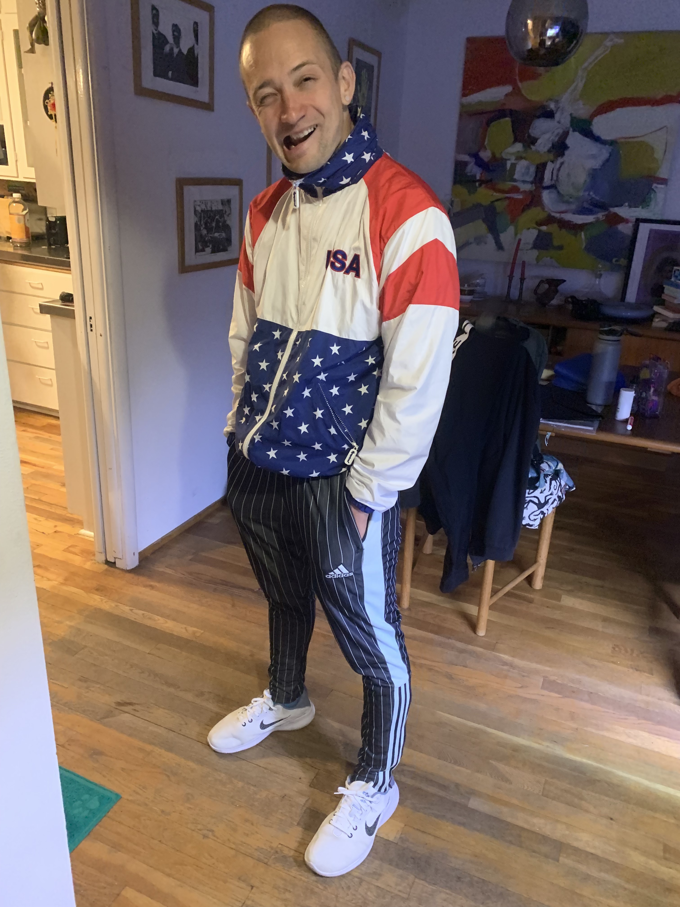
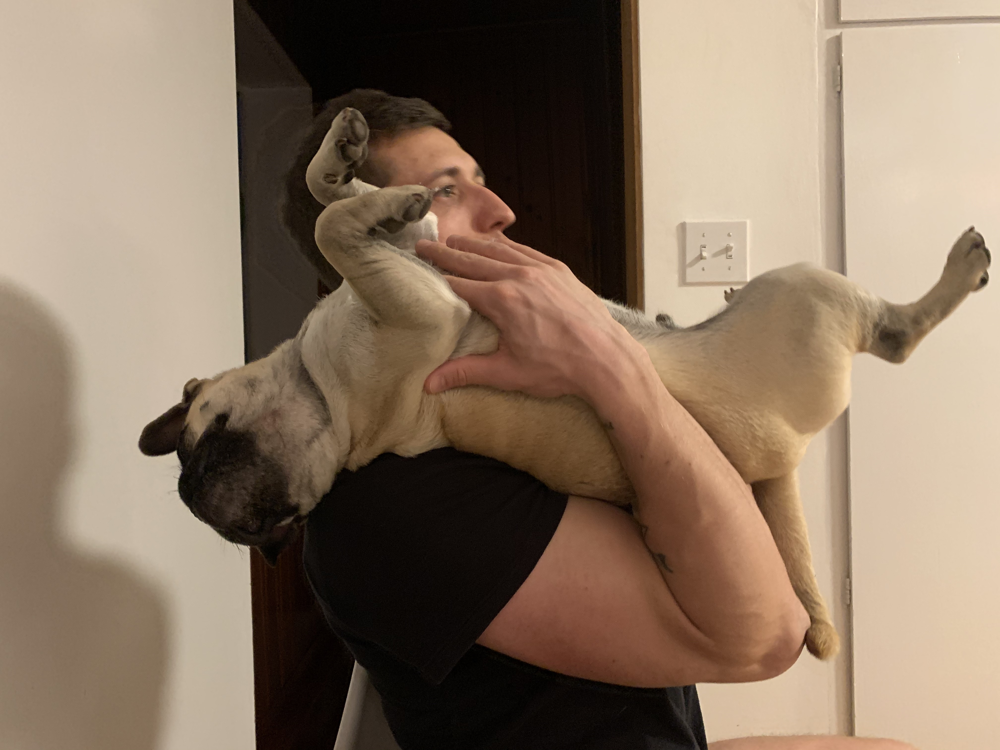
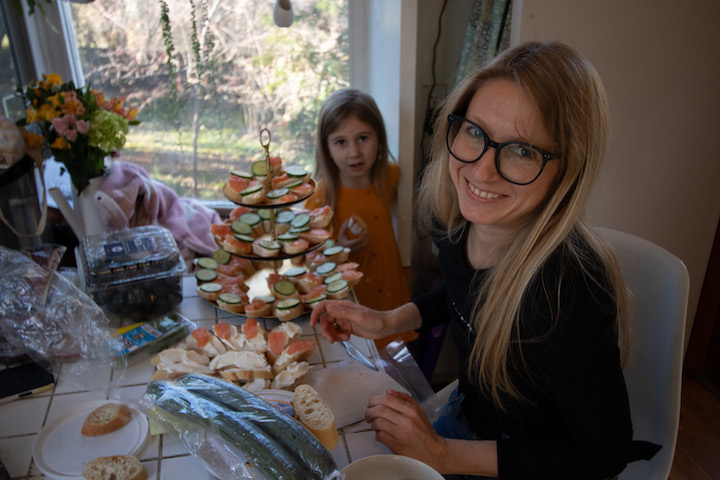
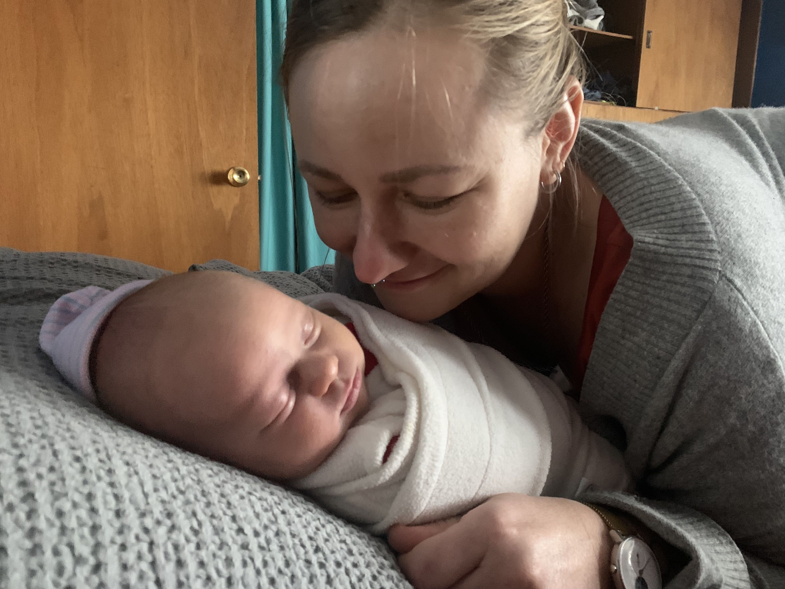

Final Essay - My Story 12/15/2023
PROMPT:
Stories are often about conflict and change. To understand our characters we sometimes need to understand ourselves: our motivations, our desires, our actions.
For your last project, you will create a multi-modal piece of writing to tell us an autobiographical story. It should be about a moment in your life when things may have changed for you (better or worse), when you made a realization, or when you experienced something unusual. Your story should include words and other media. If you produce a video or interactive media, you should also provide a complete script.
>If you absolutely must, your writing can also be just words. But, in that instance, I'd like you to consider the design of your story. Think about typography and layout. Your story can be shared as pdf (if you use software like InDesign). As always, be sure to spell and grammar check. Be thoughtful how you compose your stories.
The Catch
Your story should give others a surprising insight into who you are. It should give us a deeper impression of your character.
RESPONSE:
In 2020 my husband and our two best friends (a couple) bought a house together because the rental company in Pullman had finally pissed us off so much that we decided it was time to stop renting. Our home is a 3 bedroom with one room on the main floor, and two rooms downstairs. There is also a studio apartment in the back with one small separate room off the kitchen. As of today, 9 people live in our household (meaning main house and studio apartment combined). We are not a commune, nor an intentional community but rather a large circle of close friends whose relation to each other spans continents. These are the stories of who these people are to me, and the home we share.
Taras: Taras is my husband. We will be celebrating our 4th wedding anniversary on 12/13/2023. Taras and our relationship deserve a separate essay entirely. I will try to keep this short. I am utterly mad for this person and the reality-shifting beauty he has brought to my life. Getting to know him felt like waking up from a dream, or maybe realizing that dreams exist. He has introduced me to innumerable ideas, the most important of which has been a perspective of enduring optimism towards existence. Taras looks at all life as a bubbling milieu for the sake of itself and cheerfully examines as all of its cultures and ideas gurgling forth. He is curiosity personified with a healthy respect for the excavation of base truths, paradoxes, and the various ways to poke at them. He is serious but is easily tickled by the many jokesters he has collected and surrounded himself with over the years. I live to make this man laugh and smile. He has been one of my greatest mentors in love as only a lover can, but also in all its nuanced iterations as only the truest of friends will.
Vlad: Vlad and Taras are best friends, even if they don’t refer to each other much in these terms. They mostly refer to each other as “sister.” Vlad has a knack for and vested interest in understanding where the edges are, mathematically. This knack, or interest, or incessant obsession I think coincides nicely with Taras’ tendencies to poke at concepts. They can examine a topic together to exhausting lengths, down to a minutia which most might find unbearable (a fact they are aware and proud of). Vlad on his own though, exhausting as he maybe sometimes, is ultimately an exceptional communicator. He investigates so that he may have a totalizing understanding of any topic he finds interesting, unless of course such investigations would be unwelcome. He is motivated by a desire for truth, to be adored, and to feel sure in himself; not in that order.
Anna: Anna is, for lack of a better term, my best friend, though is described as “wise person” in my phone contacts. Anna, like Vlad and Taras, is Ukrainian and was the first of our predominantly Ukrainian friend group to move to the US, about 13 years ago. She is also Taras’ ex-wife. Being friends with the two of them has deepened my understanding of human love and compassion by what feels like orders of magnitude. She is resilient and tough, but also soft and thoughtful, but also joyous and will instigate insatiable fun. She is a deeply creative person with a razor-sharp mind. She seeks new information every day with a standpoint rooted in secular humanist morals. She doesn’t think people change and has sturdy opinions, which I admire her for. We are very different but have found ourselves to be compliments of one another.
Olya: Olya is Anna’s best friend. They have known each other since they were 12 and Anna is the god mother is Olya’s two daughters. Olya came here to live in our guest house with her girls in 2022 after the invasion of Ukraine escalated earlier that winter. Olya and I communicate less often than other people in the house because I have very little capacity to speak Ukrainian and her English is still rusty (though good, and far better than my Ukrainian). We have, however, managed to bond through sharing a home together. She has shared with me pieces of her upbringing and how hard it is to be away from her husband, Dmytro who was conscripted earlier this year and is now serving on the front lines of the war. She is not shy to admit her pain during these incredible challenges but maintains undeniable and sturdy composure. I admire her strength tremendously, not only in the midst of her own suffering, but all the while raising her children with conspicuous love and attunement to their experience.

Solamia: Solya is Olya’s oldest daughter. She is 14 now and started 8th grade. Solya is very much a teenager, searching for herself, examining what she likes and dislikes. She goes to two schools, the American one, but also keeps up with her Ukrainian courses online. She also practices classical piano several times a week. I like hanging out with her because she reminds me of what it was like to be that age. It’s expansive to empathize with her daily struggles to become a young adult in the world, especially in the face of what I consider to be her unique circumstance. Despite her complaints about school, the world, being a teenager, she remains cheerful most days and is open about her experiences.

Yasya: Yasya is Olya’s youngest daughter of 5 years old. She is very cute and she knows it. I call her a demon, lovingly. One of the most incredible things to watch has been Yasya’s development, particularly that of her linguistic capacities. She speaks English the most natively out of the three of them. She seems to switch between the two languages with unimaginable ease. I have learned so much about the elasticity of children watching her grow over this past year. Having a small child in the house has changed my perception of time. It is going ever faster and I can see it in her the most.
Evan: Evan is Anna’s husband. The four of us bought the house together. My relationship to Evan is so crystalline clear to me. He is my brother. An incredibly capable person, Evan is not only smart (graduating with his PhD this fall) but he is also very handy. He has rebuilt 4 boats and 2 cars since I started living with him in 2019. Integrity abounds as he (like Anna) holds consistent humanistic morals as a clear and guiding compass in his life. He is funny and like many in our group, very curious about how the universe works. We have fought many times about how something in the house should be handled, and this has fortified our friendship. We really know how to make each other laugh. We also know how to solve problems together well and I have learned an endless amount of hard and handy work from him. He is also Yasya's best friend.
Taissa: The newest member to our home is Taissa. She is the new baby of Anna and Evan, born at the end of November. I call her the joy machine because you can’t really experience anything but joy when you look at her. It really blows my mind to know that she is the result of combining the genetic makeup of two people I hold so dear. Our lives will never be the same now that she is in it, and this has brought me moments of awe.

With the arrival of Taissa and Evan’s graduation, another chapter is ending. So many people not listed here have circulated through our dwelling, either to stay for a visit or to stay for a while. It’s a house which acts in this story as it’s own character, created by the relationships had within in it. It will once more take a new form in January when Anna, Evan, and Taissa move to Seattle. While this brings a myriad of complex emotions, joy and expansion dominate the landscape and atmosphere. We have lit our last Christmas tree as one home and don’t know when/if we will share a Christmas together as our families grow and move. The story of our home and of ourselves carries on though, however loosely or tightly connected.
- - - - - - - - - - - - - - - - - - -